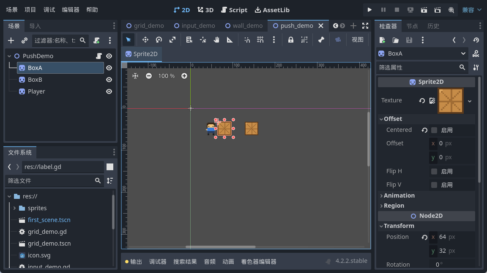
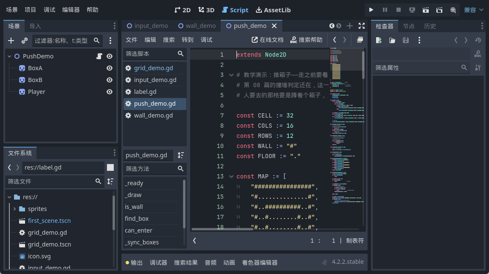
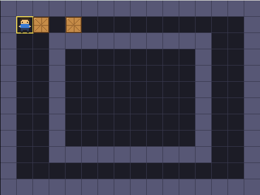
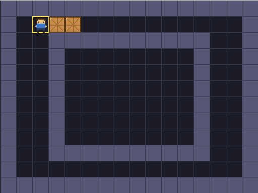
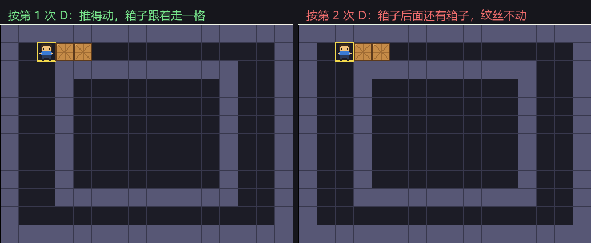
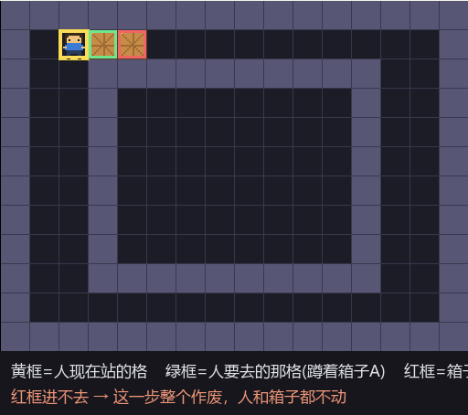

大家好，我是「山岚的运维笔记」。
上一篇小人学识咗撞墙就停，呢条规矩已经入咗脑。不过推箱子呢个游戏，净系识停唔够——佢要识推。
今日畀佢加两个箱子，再教佢一句要紧嘅话：有啲格子睇落去入得，其实推唔动。
先说清楚箱子是什么。它不是屏幕上那个木头方块，那只是影子。箱子在代码里就是一组坐标，两个箱子就两个格子号，跟场景里那两个精灵一一对应。

数据归数据，影子归影子。改数据，影子跟着挪；你在编辑器里手动拖影子，数据压根不认账。呢个坑我喺第 07 篇踩过一次——改咗格子号冇改位置属性，小人喺原地纹丝不动。到箱子这里是同一个道理，只是换了个名字。
第 08 篇讲的是「走之前先问一句」。到了推箱子，这一句得问两遍。
一问：人要去的格子，是不是墙？二问：要是那格上蹲着箱子，那箱子要去的格子，进得去吗？

两关都过了才真的动。任何一关唔过，即刻作废，咩都冇发生过。
为什么非得先算再动？你要是先推了箱子再发现推不动，就得把箱子退回去；再往后，箱子上还挂着「推了几步」的统计、还有一步步的撤销记录，回滚起来能让你怀疑人生。先算，判唔过就当冇件事，乾手净脚。
呢段我觉得系本篇最值钱嘅地方。
问「这格有没有箱子」，最直觉的回答是 true 或 false。可你问完这句，下一步十有八九是要挪它。
返回 true，你得再找一遍箱子在数组第几位；返回下标，直接改那一位就搞掂。没找到就返回 -1，这是约定俗成的「没有」。判定的时候老老实实写「不等于 -1」，别图省事拿它当布尔值用，读你代码的人会谢你。
能不能进 = 不是墙，而且没蹲着箱子。两个条件挤一行，调用的地方一行都不用多想。呢个函数而家睇落不起眼，后面佢系主力：加目标点、加撤销，都要先问佢一句。
起点：人站在左上角，两个箱子排在右边。

按一下往右。人要去的格上蹲着箱子 A，那就多看一格——A 要去的那格是空地板，进得去。于是 A 被推走一格，人站上原来 A 的位置。

再按一下。这回人前面还是箱子 A，可 A 要去的那格，蹲着箱子 B。
箱子推箱子？谂多咗。呢一步作废晒，人同箱子都留喺原地。

左右两张我比对过，像素级一模一样。按咗，冇动，咁就啱喇。
「看两格」画出来是这样：

黄框是人站的格，绿框是人要去的格，红框是箱子要去的那格。红框进不去，整个动作取消。
今天其实就一句话：推箱子之前，要看的不是一格，是两格。人要去哪里，箱子要去哪里，两处都通得过才动。
而家箱子推得动又推唔动喇，不过佢哋仲未知自己应该去边。下一篇帮箱子搵几个「家」——目标点，全部归位就算赢。
箱子推得起喇，点赞 + 在看收好；关注「山岚的运维笔记」，下一篇帮箱子搵家。评论区吹水啦。
（配套工程在 GitHub 的 Boxman 仓库 tutorial 分支，每篇一个进度 tag，随时能下到对应版本。）